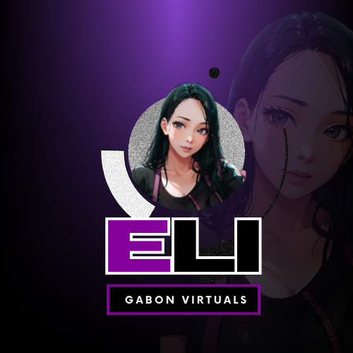

While formally employed in a reputable people-oriented company, I also took part in several businesses and helped them grow. Being a professional graphic designer is my passion, so I enjoy getting design work done and trying something new on each of my projects. Check out my key skills:
| Interpersonal Skills | Expertise Skills | Design Skills |
|---|---|---|
| Creativity | Graphic Design | Visual Identity |
| Active listening | Customer Service | Social Media |
| Flexibility & Adaptability | Organizational Skills | Marketing Materials | Decision-making | Project management | Logo & Layouts |
While my educational background may not align directly with my current role, it has served as a foundation that has enriched my perspective and problem-solving abilities. I believe that my unique blend of education and professional experience has allowed me to approach challenges with a fresh and innovative mindset. In this dynamic world, I've learned that valuable lessons can be drawn from various facets of life, and I'm excited to bring the wisdom from my educational journey into my current job.
| Year | School | Course/Level |
|---|---|---|
| 2011-2015 | Bataan Peninsula State University-Main Campus | BS Tourism Management |
| 2010-2011 | Bulacan State University-Main Campus | BS Tourism Management |
| 2006-2010 | Vicente P. Trinidad National High School | Secondary |
My formal employment history reflects a journey marked by dedication, growth, and a commitment to excellence. Over the years, I have had the privilege of working with esteemed organizations in various roles, each contributing to my professional development and shaping my expertise.
| Year | Company | Job Title |
|---|---|---|
| 2021-2023 | Wells Fargo International Services, LLC-Philippines | Associate Customer Success Specialist |
| 2020-2021 | Sitel Philippines Corp. | Contact Center Professional |
| 2019-2020 | Genpact Services LLC-Bataan | Process Associate | 2015-2016 | Shammahnissi Travel & Tours | Tour Coordinator |
My professional journey has been a dynamic blend of formal employment, freelancing, and part-time engagements. I've embraced a diverse career path that has allowed me to thrive in various capacities. While dedicated to my formal role, I've also ventured into the world of freelancing and part-time work, leveraging my skills and passions to pursue exciting opportunities beyond my primary job.
| Year | Role | Company |
|---|---|---|
| 2023 | Lead Generation Specialist; Appointment Setter | Red Roof Homebuyers |
| 2021-2023 | Logo Designer; Junior Content Creator | O'Kape.mo |
| 2016-2023 | Graphic Design Head; Social Media Manager | Masarej Flower Shop |
| 2015-2020 | Owner/Entrepreneur | Sky's Shop&Click |
| 2014-2018 | Events Coordinator; Multimedia ASsociate | Sky's Shop&Click |
Hi! It's me again ELI. Lemme share with you some facts about me.
Background
With over 8 years of experience and competence as a highly motivated specialist, I am a dedicated, organized, and detail-oriented individual aiming to leverage my expertise in business operations, project management, and client relations. I started in a customer-driven industry, specifically the Tourism Industry, applied my skills acquired from education, and managed to handle both customers and suppliers. I improved my skills and developed leadership through the BPO industry for 5 years. Whilst, I am also working as a freelance graphic artist and social media manager for several businesses aiming to increase their market and set proper branding.
My Life Quote
"A strong-willed woman pursuing passions and taking tough challenges treating them as Life's freatest adventures."
"Balancing the roles of a devoted mom and wife while pursuing a fulfilling career is a juggling act filled with joy, love, and everyday adventures. Being a mom means endless hugs, giggles, and the profound privilege of shaping the future. As a wife, it's about nurturing a partnership built on love, trust, and unwavering support. And as a working mom, it's the art of seamlessly merging professional aspirations with family life, striving for success both at the office and in the loving embrace of home. Join me on this remarkable journey as we explore the beautiful chaos and heartwarming moments that come with the territory of being a mom, a wife, and a dedicated working woman."
A Snippet
Feel free to watch our getaway last 2021! Fun Fact: This was my first visit in Baguio at the age of 27! HAHAHHAHAH!
Picture a workplace where the rhythm of productivity is accompanied by the harmonious tunes of enthusiasm. Music has the power to transform a mundane office into a vibrant space where creativity flows, motivation soars, and challenges are met with a smile.
Yes! I am a Swiftie!
DID YOU KNOW? Many of the songs on the album are inspired by real-life events and people. For example, "Dear John" is believed to be about her relationship with John Mayer, while "Back to December" is an apology to a former flame, believed to be Taylor Lautner. The album includes the song "All Too Well," which is known for its emotional depth and storytelling. It's one of the longest tracks in Taylor Swift's discography and has become a fan favorite.
While formally employed in a reputable people-oriented company, I also took part in several businesses and helped them grow. Being a freelance graphic designer is my passion, so I enjoy getting design work done and trying something new on each of my projects.
This is my personal brand. I made this logo with an animated version of my selfie. ELAI is my actual nickname, but I prefer to use ELI as it is easier to be remembered by my foreign clients.
In the dynamic world of graphic design, my portfolio showcases a diverse range of projects that blend creativity, innovation, and visual storytelling. With a passion for crafting compelling visual narratives, I've had the privilege of working on an array of design initiatives, from branding and logo design to social media graphics and print materials. Each project represents a unique canvas where I've applied my skills to transform concepts into captivating visuals. I invite you to explore my graphic design journey, where colors, shapes, and typography converge to bring ideas to life and leave a lasting impression.